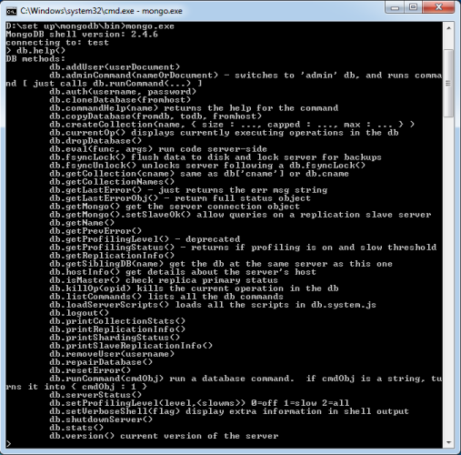
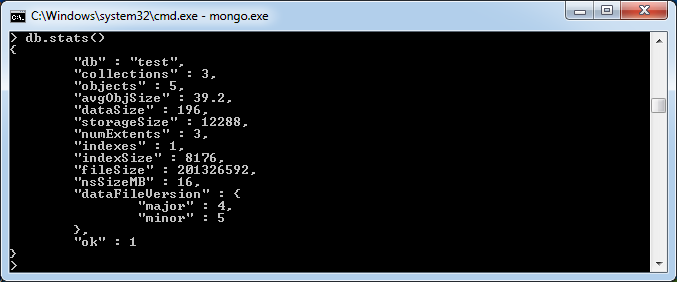
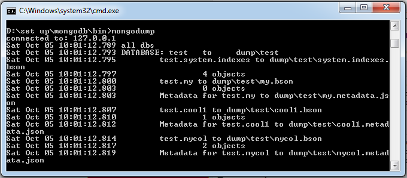
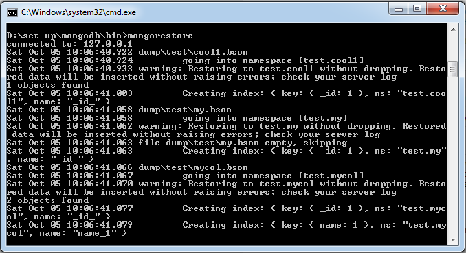
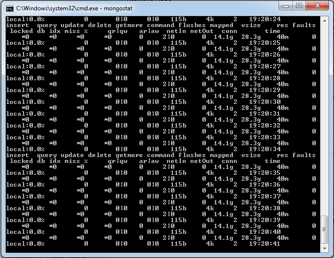
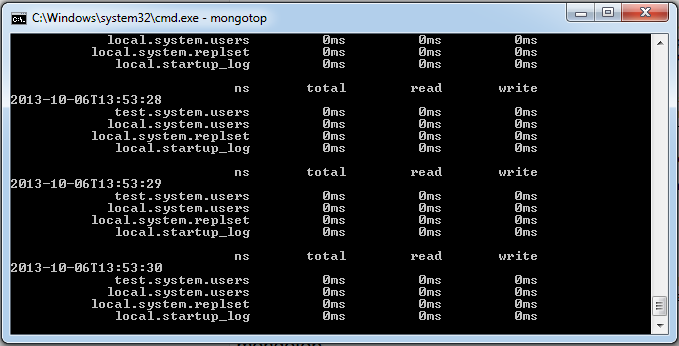

MongoDB Tutorial
MongoDB is an open-source document database, and leading NoSQL database. MongoDB is written in c++.
This tutorial will give you great understanding on MongoDB concepts needed to create and deploy a highly scalable and performance oriented database.
Audience
This tutorial is designed for Software Professionals who are willing to learn MongoDB Database in simple and easy steps. This tutorial will give you great understanding on MongoDB concepts and after completing this tutorial you will be at intermediate level of expertise from where you can take yourself at higher level of expertise.
Prerequisites
Before proceeding with this tutorial you should have a basic understanding of database, text editor and execution of programs etc. Because we are going to develop high performance database, so it will be good if you have understanding on basic concepts of Database (RDBMS).
MongoDB - Overview
MongoDB is a cross-platform, document oriented database that provides, high performance, high availability, and easy scalability. MongoDB works on concept of collection and document.
Database
Database is a physical container for collections. Each database gets its own set of files on the file system. A single MongoDB server typically has multiple databases.
Collection
Collection is a group of MongoDB documents. It is the equivalent of an RDBMS table. A collection exists within a single database. Collections do not enforce a schema. Documents within a collection can have different fields. Typically, all documents in a collection are of similar or related purpose.
Document
A document is a set of key-value pairs. Documents have dynamic schema. Dynamic schema means that documents in the same collection do not need to have the same set of fields or structure, and common fields in a collection's documents may hold different types of data.
Below given table shows the relationship of RDBMS terminology with MongoDB
| RDBMS |
MongoDB |
| Database |
Database |
| Table |
Collection |
| Tuple/Row |
Document |
| Column |
Field |
| Table Join |
Embedded Documents |
| Primary Key |
Primary Key (Default key _id provided by mongodb itself) |
| Database Server and Client |
| Mysqld/Oracle |
mongod |
| mysql/sqlplus |
mongo |
Sample document
Below given example shows the document structure of a blog site which is simply a comma separated key value pair.
{
_id: ObjectId(7df78ad8902c)
title: 'MongoDB Overview',
description: 'MongoDB is no sql database',
by: 'tutorials point',
url: 'http://www.tutorialspoint.com',
tags: ['mongodb', 'database', 'NoSQL'],
likes: 100,
comments: [
{
user:'user1',
message: 'My first comment',
dateCreated: new Date(2011,1,20,2,15),
like: 0
},
{
user:'user2',
message: 'My second comments',
dateCreated: new Date(2011,1,25,7,45),
like: 5
}
]
}
_id is a 12 bytes hexadecimal number which assures the uniqueness of every document. You can provide _id while inserting the document. If you didn't provide then MongoDB provide a unique id for every document. These 12 bytes first 4 bytes for the current timestamp, next 3 bytes for machine id, next 2 bytes for process id of mongodb server and remaining 3 bytes are simple incremental value.
MongoDB - Advantages
Any relational database has a typical schema design that shows number of tables and the relationship between these tables. While in MongoDB there is no concept of relationship.
Advantages of MongoDB over RDBMS
-
Schemaless: MongoDB is document database in which one collection holds different different documents. Number of fields, content and size of the document can be differ from one document to another.
-
Structure of a single object is clear
-
No complex joins
-
Deep query-ability. MongoDB supports dynamic queries on documents using a document-based query language that's nearly as powerful as SQL
-
Tuning
-
Ease of scale-out: MongoDB is easy to scale
-
Conversion/mapping of application objects to database objects not needed
-
Uses internal memory for storing the (windowed) working set, enabling faster access of data
Why should use MongoDB
Where should use MongoDB?
MongoDB - Environment
Install MongoDB On Windows
To install the MongoDB on windows, first download the latest release of MongoDB from http://www.mongodb.org/downloads. Make sure you get correct version of MongoDB depending upon your windows version. To get your windows version open command prompt and execute following command.
C:\>wmic os get osarchitecture
OSArchitecture
64-bit
C:\>
32-bit versions of MongoDB only support databases smaller than 2GB and suitable only for testing and evaluation purposes.
Now extract your downloaded file to c:\ drive or any other location. Make sure name of the extracted folder is mongodb-win32-i386-[version] or mongodb-win32-x86_64-[version]. Here [version] is the version of MongoDB download.
Now open command prompt and run the following command
C:\>move mongodb-win64-* mongodb
1 dir(s) moved.
C:\>
In case you have extracted the mongodb at different location, then go to that path by using command cd FOOLDER/DIR and now run the above given process.
MongoDB requires a data folder to store its files. The default location for the MongoDB data directory is c:\data\db. So you need to create this folder using the Command Prompt. Execute the following command sequence.
C:\>md data
C:\>md data\db
If you have install the MongoDB at different location, then you need to specify any alternate path for \data\db by setting the path dbpath in mongod.exe. For the same issue following commands.
In command prompt navigate to the bin directory present into the mongodb installation folder. Suppose my installation folder is D:\set up\mongodb
C:\Users\XYZ>d:
D:\>cd "set up"
D:\set up>cd mongodb
D:\set up\mongodb>cd bin
D:\set up\mongodb\bin>mongod.exe --dbpath "d:\set up\mongodb\data"
This will show waiting for connections message on the console output indicates that the mongod.exe process is running successfully.
Now to run the mongodb you need to open another command prompt and issue the following command.
D:\set up\mongodb\bin>mongo.exe
MongoDB shell version: 2.4.6
connecting to: test
>db.test.save( { a: 1 } )
>db.test.find()
{ "_id" : ObjectId(5879b0f65a56a454), "a" : 1 }
>
This will show that mongodb is installed and run successfully. Next time when you run mongodb you need to issue only commands.
D:\set up\mongodb\bin>mongod.exe --dbpath "d:\set up\mongodb\data"
D:\set up\mongodb\bin>mongo.exe
Install MongoDB on Ubuntu
Run the following command to import the MongoDB public GPG Key −
sudo apt-key adv --keyserver hkp://keyserver.ubuntu.com:80 --recv 7F0CEB10
Create a /etc/apt/sources.list.d/mongodb.list file using the following command.
echo 'deb http://downloads-distro.mongodb.org/repo/ubuntu-upstart dist 10gen'
| sudo tee /etc/apt/sources.list.d/mongodb.list
Now issue the following command to update the repository −
sudo apt-get update
Now install the MongoDB by using following command −
apt-get install mongodb-10gen=2.2.3
In the above installation 2.2.3 is currently released mongodb version. Make sure to install latest version always. Now mongodb is installed successfully.
Start MongoDB
sudo service mongodb start
Stop MongoDB
sudo service mongodb stop
Restart MongoDB
sudo service mongodb restart
To use mongodb run the following command
mongo
This will connect you to running mongod instance.
MongoDB Help
To get list of commands type db.help() in mongodb client. This will give you list of commands as follows:

MongoDB Statistics
To get stats about mongodb server type the command db.stats() in mongodb client. This will show the database name, number of collection and documents in the database. Output the command is shown below −

MongoDB - Data Modelling
Data in MongoDB has a flexible schema.documents in the same collection do not need to have the same set of fields or structure, and common fields in a collection’s documents may hold different types of data.
Some considerations while designing schema in MongoDB
-
Design your schema according to user requirements.
-
Combine objects into one document if you will use them together. Otherwise separate them (but make sure there should not be need of joins).
-
Duplicate the data (but limited) because disk space is cheap as compare to compute time.
-
Do joins while write, not on read.
-
Optimize your schema for most frequent use cases.
-
Do complex aggregation in the schema
Example
Suppose a client needs a database design for his blog website and see the differences between RDBMS and MongoDB schema design. Website has the following requirements.
-
Every post has the unique title, description and url.
-
Every post can have one or more tags.
-
Every post has the name of its publisher and total number of likes.
-
Every post have comments given by users along with their name, message, data-time and likes.
-
On each post there can be zero or more comments.
In RDBMS schema design for above requirements will have minimum three tables.

While in MongoDB schema design will have one collection post and has the following structure:
{
_id: POST_ID
title: TITLE_OF_POST,
description: POST_DESCRIPTION,
by: POST_BY,
url: URL_OF_POST,
tags: [TAG1, TAG2, TAG3],
likes: TOTAL_LIKES,
comments: [
{
user:'COMMENT_BY',
message: TEXT,
dateCreated: DATE_TIME,
like: LIKES
},
{
user:'COMMENT_BY',
message: TEXT,
dateCreated: DATE_TIME,
like: LIKES
}
]
}
So while showing the data, in RDBMS you need to join three tables and in mongodb data will be shown from one collection only.
MongoDB - Create Database
The use Command
MongoDB use DATABASE_NAME is used to create database. The command will create a new database, if it doesn't exist otherwise it will return the existing database.
Syntax:
Basic syntax of use DATABASE statement is as follows:
use DATABASE_NAME
Example:
If you want to create a database with name <mydb>, then use DATABASE statement would be as follows:
>use mydb
switched to db mydb
To check your currently selected database use the command db
>db
mydb
If you want to check your databases list, then use the command show dbs.
>show dbs
local 0.78125GB
test 0.23012GB
Your created database (mydb) is not present in list. To display database you need to insert at least one document into it.
>db.movie.insert({"name":"tutorials point"})
>show dbs
local 0.78125GB
mydb 0.23012GB
test 0.23012GB
In mongodb default database is test. If you didn't create any database then collections will be stored in test database.
MongoDB - Drop Database
The dropDatabase() Method
MongoDB db.dropDatabase() command is used to drop a existing database.
Syntax:
Basic syntax of dropDatabase() command is as follows:
db.dropDatabase()
This will delete the selected database. If you have not selected any database, then it will delete default 'test' database
Example:
First, check the list available databases by using the command show dbs
>show dbs
local 0.78125GB
mydb 0.23012GB
test 0.23012GB
>
If you want to delete new database <mydb>, then dropDatabase() command would be as follows:
>use mydb
switched to db mydb
>db.dropDatabase()
>{ "dropped" : "mydb", "ok" : 1 }
>
Now check list of databases
>show dbs
local 0.78125GB
test 0.23012GB
>
MongoDB - Create Collection
The createCollection() Method
MongoDB db.createCollection(name, options) is used to create collection.
Syntax:
Basic syntax of createCollection() command is as follows
db.createCollection(name, options)
In the command, name is name of collection to be created. Options is a document and used to specify configuration of collection
| Parameter |
Type |
Description |
| Name |
String |
Name of the collection to be created |
| Options |
Document |
(Optional) Specify options about memory size and indexing |
Options parameter is optional, so you need to specify only name of the collection. Following is the list of options you can use:
| Field |
Type |
Description |
| capped |
Boolean |
(Optional) If true, enables a capped collection. Capped collection is a collection fixed size collecction that automatically overwrites its oldest entries when it reaches its maximum size. If you specify true, you need to specify size parameter also. |
| autoIndexID |
Boolean |
(Optional) If true, automatically create index on _id field. Default value is false. |
| size |
number |
(Optional) Specifies a maximum size in bytes for a capped collection. If capped is true, then you need to specify this field also. |
| max |
number |
(Optional) Specifies the maximum number of documents allowed in the capped collection. |
While inserting the document, MongoDB first checks size field of capped collection, then it checks max field.
Examples:
Basic syntax of createCollection() method without options is as follows
>use test
switched to db test
>db.createCollection("mycollection")
{ "ok" : 1 }
>
You can check the created collection by using the command show collections
>show collections
mycollection
system.indexes
Following example shows the syntax of createCollection() method with few important options:
>db.createCollection("mycol", { capped : true, autoIndexID : true, size : 6142800, max : 10000 } )
{ "ok" : 1 }
>
In mongodb you don't need to create collection. MongoDB creates collection automatically, when you insert some document.
>db.tutorialspoint.insert({"name" : "tutorialspoint"})
>show collections
mycol
mycollection
system.indexes
tutorialspoint
>
MongoDB - Drop Collection
The drop() Method
MongoDB's db.collection.drop() is used to drop a collection from the database.
Syntax:
Basic syntax of drop() command is as follows
db.COLLECTION_NAME.drop()
Example:
First, check the available collections into your database mydb
>use mydb
switched to db mydb
>show collections
mycol
mycollection
system.indexes
tutorialspoint
>
Now drop the collection with the name mycollection
>db.mycollection.drop()
true
>
Again check the list of collections into database
>show collections
mycol
system.indexes
tutorialspoint
>
drop() method will return true if the selected collection is dropped successfully, otherwise it will return false.
MongoDB - Datatypes
MongoDB supports many datatypes whose list is given below:
-
String: This is most commonly used datatype to store the data. String in mongodb must be UTF-8 valid.
-
Integer: This type is used to store a numerical value. Integer can be 32 bit or 64 bit depending upon your server.
-
Boolean: This type is used to store a boolean (true/ false) value.
-
Double: This type is used to store floating point values.
-
Min/Max keys : This type is used to compare a value against the lowest and highest BSON elements.
-
Arrays: This type is used to store arrays or list or multiple values into one key.
-
Timestamp: ctimestamp. This can be handy for recording when a document has been modified or added.
-
Object : This datatype is used for embedded documents.
-
Null : This type is used to store a Null value.
-
Symbol: This datatype is used identically to a string however, it's generally reserved for languages that use a specific symbol type.
-
Date: This datatype is used to store the current date or time in UNIX time format. You can specify your own date time by creating object of Date and passing day, month, year into it.
-
Object ID: This datatype is used to store the document’s ID.
-
Binary data: This datatype is used to store binay data.
-
Code: This datatype is used to store Javascript code into document.
-
Regular expression: This datatype is used to store regular expression
MongoDB - Insert Document
The insert() Method
To insert data into MongoDB collection, you need to use MongoDB's insert() or save()method.
Syntax
Basic syntax of insert() command is as follows:
>db.COLLECTION_NAME.insert(document)
Example
>db.mycol.insert({
_id: ObjectId(7df78ad8902c),
title: 'MongoDB Overview',
description: 'MongoDB is no sql database',
by: 'tutorials point',
url: 'http://www.tutorialspoint.com',
tags: ['mongodb', 'database', 'NoSQL'],
likes: 100
})
Here mycol is our collection name, as created in previous tutorial. If the collection doesn't exist in the database, then MongoDB will create this collection and then insert document into it.
In the inserted document if we don't specify the _id parameter, then MongoDB assigns an unique ObjectId for this document.
_id is 12 bytes hexadecimal number unique for every document in a collection. 12 bytes are divided as follows:
_id: ObjectId(4 bytes timestamp, 3 bytes machine id, 2 bytes process id, 3 bytes incrementer)
To insert multiple documents in single query, you can pass an array of documents in insert() command.
Example
>db.post.insert([
{
title: 'MongoDB Overview',
description: 'MongoDB is no sql database',
by: 'tutorials point',
url: 'http://www.tutorialspoint.com',
tags: ['mongodb', 'database', 'NoSQL'],
likes: 100
},
{
title: 'NoSQL Database',
description: 'NoSQL database doesn't have tables',
by: 'tutorials point',
url: 'http://www.tutorialspoint.com',
tags: ['mongodb', 'database', 'NoSQL'],
likes: 20,
comments: [
{
user:'user1',
message: 'My first comment',
dateCreated: new Date(2013,11,10,2,35),
like: 0
}
]
}
])
To insert the document you can use db.post.save(document) also. If you don't specify _id in the document then save() method will work same as insert() method. If you specify _id then it will replace whole data of document containing _id as specified in save() method.
MongoDB - Query Document
The find() Method
To query data from MongoDB collection, you need to use MongoDB's find() method.
Syntax
Basic syntax of find() method is as follows
>db.COLLECTION_NAME.find()
find() method will display all the documents in a non structured way.
The pretty() Method
To display the results in a formatted way, you can use pretty() method.
Syntax
>db.mycol.find().pretty()
Example
>db.mycol.find().pretty()
{
"_id": ObjectId(7df78ad8902c),
"title": "MongoDB Overview",
"description": "MongoDB is no sql database",
"by": "tutorials point",
"url": "http://www.tutorialspoint.com",
"tags": ["mongodb", "database", "NoSQL"],
"likes": "100"
}
>
Apart from find() method there is findOne() method, that returns only one document.
RDBMS Where Clause Equivalents in MongoDB
To query the document on the basis of some condition, you can use following operations
| Operation |
Syntax |
Example |
RDBMS Equivalent |
| Equality |
{<key>:<value>} |
db.mycol.find({"by":"tutorials point"}).pretty() |
where by = 'tutorials point' |
| Less Than |
{<key>:{$lt:<value>}} |
db.mycol.find({"likes":{$lt:50}}).pretty() |
where likes < 50 |
| Less Than Equals |
{<key>:{$lte:<value>}} |
db.mycol.find({"likes":{$lte:50}}).pretty() |
where likes <= 50 |
| Greater Than |
{<key>:{$gt:<value>}} |
db.mycol.find({"likes":{$gt:50}}).pretty() |
where likes > 50 |
| Greater Than Equals |
{<key>:{$gte:<value>}} |
db.mycol.find({"likes":{$gte:50}}).pretty() |
where likes >= 50 |
| Not Equals |
{<key>:{$ne:<value>}} |
db.mycol.find({"likes":{$ne:50}}).pretty() |
where likes != 50 |
AND in MongoDB
Syntax
In the find() method if you pass multiple keys by separating them by ',' then MongoDB treats it AND condition. Basic syntax of AND is shown below:
>db.mycol.find({key1:value1, key2:value2}).pretty()
Example
Below given example will show all the tutorials written by 'tutorials point' and whose title is 'MongoDB Overview'
>db.mycol.find({"by":"tutorials point","title": "MongoDB Overview"}).pretty()
{
"_id": ObjectId(7df78ad8902c),
"title": "MongoDB Overview",
"description": "MongoDB is no sql database",
"by": "tutorials point",
"url": "http://www.tutorialspoint.com",
"tags": ["mongodb", "database", "NoSQL"],
"likes": "100"
}
>
For the above given example equivalent where clause will be ' where by='tutorials point' AND title = 'MongoDB Overview' '. You can pass any number of key, value pairs in find clause.
OR in MongoDB
Syntax
To query documents based on the OR condition, you need to use $or keyword. Basic syntax of OR is shown below:
>db.mycol.find(
{
$or: [
{key1: value1}, {key2:value2}
]
}
).pretty()
Example
Below given example will show all the tutorials written by 'tutorials point' or whose title is 'MongoDB Overview'
>db.mycol.find({$or:[{"by":"tutorials point"},{"title": "MongoDB Overview"}]}).pretty()
{
"_id": ObjectId(7df78ad8902c),
"title": "MongoDB Overview",
"description": "MongoDB is no sql database",
"by": "tutorials point",
"url": "http://www.tutorialspoint.com",
"tags": ["mongodb", "database", "NoSQL"],
"likes": "100"
}
>
Using AND and OR together
Example
Below given example will show the documents that have likes greater than 100 and whose title is either 'MongoDB Overview' or by is 'tutorials point'. Equivalent sql where clause is 'where likes>10 AND (by = 'tutorials point' OR title = 'MongoDB Overview')'
>db.mycol.find({"likes": {$gt:10}, $or: [{"by": "tutorials point"},
{"title": "MongoDB Overview"}]}).pretty()
{
"_id": ObjectId(7df78ad8902c),
"title": "MongoDB Overview",
"description": "MongoDB is no sql database",
"by": "tutorials point",
"url": "http://www.tutorialspoint.com",
"tags": ["mongodb", "database", "NoSQL"],
"likes": "100"
}
>
MongoDB - Update Document
MongoDB's update() and save() methods are used to update document into a collection. The update() method update values in the existing document while the save() method replaces the existing document with the document passed in save() method.
MongoDB Update() method
The update() method updates values in the existing document.
Syntax
Basic syntax of update() method is as follows
>db.COLLECTION_NAME.update(SELECTIOIN_CRITERIA, UPDATED_DATA)
Example
Consider the mycol collectioin has following data.
{ "_id" : ObjectId(5983548781331adf45ec5), "title":"MongoDB Overview"}
{ "_id" : ObjectId(5983548781331adf45ec6), "title":"NoSQL Overview"}
{ "_id" : ObjectId(5983548781331adf45ec7), "title":"Tutorials Point Overview"}
Following example will set the new title 'New MongoDB Tutorial' of the documents whose title is 'MongoDB Overview':
>db.mycol.update({'title':'MongoDB Overview'},{$set:{'title':'New MongoDB Tutorial'}})
>db.mycol.find()
{ "_id" : ObjectId(5983548781331adf45ec5), "title":"New MongoDB Tutorial"}
{ "_id" : ObjectId(5983548781331adf45ec6), "title":"NoSQL Overview"}
{ "_id" : ObjectId(5983548781331adf45ec7), "title":"Tutorials Point Overview"}
>
By default mongodb will update only single document, to update multiple you need to set a paramter 'multi' to true.
>db.mycol.update({'title':'MongoDB Overview'},
{$set:{'title':'New MongoDB Tutorial'}},{multi:true})
MongoDB Save() Method
The save() method replaces the existing document with the new document passed in save() method.
Syntax
Basic syntax of mongodb save() method is shown below:
>db.COLLECTION_NAME.save({_id:ObjectId(),NEW_DATA})
Example
Following example will replace the document with the _id '5983548781331adf45ec7':
>db.mycol.save(
{
"_id" : ObjectId(5983548781331adf45ec7), "title":"Tutorials Point New Topic",
"by":"Tutorials Point"
}
)
>db.mycol.find()
{ "_id" : ObjectId(5983548781331adf45ec5), "title":"Tutorials Point New Topic",
"by":"Tutorials Point"}
{ "_id" : ObjectId(5983548781331adf45ec6), "title":"NoSQL Overview"}
{ "_id" : ObjectId(5983548781331adf45ec7), "title":"Tutorials Point Overview"}
>
MongoDB - Delete Document
The remove() Method
MongoDB's remove() method is used to remove document from the collection. remove() method accepts two parameters. One is deletion criteria and second is justOne flag.
-
deletion criteria : (Optional) deletion criteria according to documents will be removed.
-
justOne : (Optional) if set to true or 1, then remove only one document.
Syntax:
Basic syntax of remove() method is as follows
>db.COLLECTION_NAME.remove(DELLETION_CRITTERIA)
Example
Consider the mycol collectioin has following data.
{ "_id" : ObjectId(5983548781331adf45ec5), "title":"MongoDB Overview"}
{ "_id" : ObjectId(5983548781331adf45ec6), "title":"NoSQL Overview"}
{ "_id" : ObjectId(5983548781331adf45ec7), "title":"Tutorials Point Overview"}
Following example will remove all the documents whose title is 'MongoDB Overview'
>db.mycol.remove({'title':'MongoDB Overview'})
>db.mycol.find()
{ "_id" : ObjectId(5983548781331adf45ec6), "title":"NoSQL Overview"}
{ "_id" : ObjectId(5983548781331adf45ec7), "title":"Tutorials Point Overview"}
>
Remove only one
If there are multiple records and you want to delete only first record, then set justOne parameter in remove() method
>db.COLLECTION_NAME.remove(DELETION_CRITERIA,1)
Remove All documents
If you don't specify deletion criteria, then mongodb will delete whole documents from the collection. This is equivalent of SQL's truncate command.
>db.mycol.remove()
>db.mycol.find()
>
MongoDB - Projection
In mongodb projection meaning is selecting only necessary data rather than selecting whole of the data of a document. If a document has 5 fields and you need to show only 3, then select only 3 fields from them.
The find() Method
MongoDB's find() method, explained in MongoDB Query Document accepts second optional parameter that is list of fields that you want to retrieve. In MongoDB when you execute find() method, then it displays all fields of a document. To limit this you need to set list of fields with value 1 or 0. 1 is used to show the field while 0 is used to hide the field.
Syntax:
Basic syntax of find() method with projection is as follows
>db.COLLECTION_NAME.find({},{KEY:1})
Example
Consider the collection mycol has the following data:
{ "_id" : ObjectId(5983548781331adf45ec5), "title":"MongoDB Overview"}
{ "_id" : ObjectId(5983548781331adf45ec6), "title":"NoSQL Overview"}
{ "_id" : ObjectId(5983548781331adf45ec7), "title":"Tutorials Point Overview"}
Following example will display the title of the document while quering the document.
>db.mycol.find({},{"title":1,_id:0})
{"title":"MongoDB Overview"}
{"title":"NoSQL Overview"}
{"title":"Tutorials Point Overview"}
>
Please note _id field is always displayed while executing find() method, if you don't want this field, then you need to set it as 0.
MongoDB - Limit Records
The Limit() Method
To limit the records in MongoDB, you need to use limit() method. limit() method accepts one number type argument, which is number of documents that you want to displayed.
Syntax:
Basic syntax of limit() method is as follows
>db.COLLECTION_NAME.find().limit(NUMBER)
Example
Consider the collection myycol has the following data
{ "_id" : ObjectId(5983548781331adf45ec5), "title":"MongoDB Overview"}
{ "_id" : ObjectId(5983548781331adf45ec6), "title":"NoSQL Overview"}
{ "_id" : ObjectId(5983548781331adf45ec7), "title":"Tutorials Point Overview"}
Following example will display only 2 documents while quering the document.
>db.mycol.find({},{"title":1,_id:0}).limit(2)
{"title":"MongoDB Overview"}
{"title":"NoSQL Overview"}
>
If you don't specify number argument in limit() method then it will display all documents from the collection.
MongoDB Skip() Method
Apart from limit() method there is one more method skip() which also accepts number type argument and used to skip number of documents.
Syntax:
Basic syntax of skip() method is as follows
>db.COLLECTION_NAME.find().limit(NUMBER).skip(NUMBER)
Example:
Following example will only display only second document.
>db.mycol.find({},{"title":1,_id:0}).limit(1).skip(1)
{"title":"NoSQL Overview"}
>
Please note default value in skip() method is 0
MongoDB - Sort Records
The sort() Method
To sort documents in MongoDB, you need to use sort() method. sort() method accepts a document containing list of fields along with their sorting order. To specify sorting order 1 and -1 are used. 1 is used for ascending order while -1 is used for descending order.
Syntax:
Basic syntax of sort() method is as follows
>db.COLLECTION_NAME.find().sort({KEY:1})
Example
Consider the collection myycol has the following data
{ "_id" : ObjectId(5983548781331adf45ec5), "title":"MongoDB Overview"}
{ "_id" : ObjectId(5983548781331adf45ec6), "title":"NoSQL Overview"}
{ "_id" : ObjectId(5983548781331adf45ec7), "title":"Tutorials Point Overview"}
Following example will display the documents sorted by title in descending order.
>db.mycol.find({},{"title":1,_id:0}).sort({"title":-1})
{"title":"Tutorials Point Overview"}
{"title":"NoSQL Overview"}
{"title":"MongoDB Overview"}
>
Please note if you don't specify the sorting preference, then sort() method will display documents in ascending order.
MongoDB - Indexing
Indexes support the efficient resolution of queries. Without indexes, MongoDB must scan every document of a collection to select those documents that match the query statement. This scan is highly inefficient and require the mongodb to process a large volume of data.
Indexes are special data structures, that store a small portion of the data set in an easy to traverse form. The index stores the value of a specific field or set of fields, ordered by the value of the field as specified in index.
The ensureIndex() Method
To create an index you need to use ensureIndex() method of mongodb.
Syntax:
Basic syntax of ensureIndex() method is as follows()
>db.COLLECTION_NAME.ensureIndex({KEY:1})
Here key is the name of filed on which you want to create index and 1 is for ascending order. To create index in descending order you need to use -1.
Example
>db.mycol.ensureIndex({"title":1})
>
In ensureIndex() method you can pass multiple fields, to create index on multiple fields.
>db.mycol.ensureIndex({"title":1,"description":-1})
>
ensureIndex() method also accepts list of options (which are optional), whose list is given below:
| Parameter |
Type |
Description |
| background |
Boolean |
Builds the index in the background so that building an index does not block other database activities. Specify true to build in the background. The default value is false. |
| unique |
Boolean |
Creates a unique index so that the collection will not accept insertion of documents where the index key or keys match an existing value in the index. Specify true to create a unique index. The default value is false. |
| name |
string |
The name of the index. If unspecified, MongoDB generates an index name by concatenating the names of the indexed fields and the sort order. |
| dropDups |
Boolean |
Creates a unique index on a field that may have duplicates. MongoDB indexes only the first occurrence of a key and removes all documents from the collection that contain subsequent occurrences of that key. Specify true to create unique index. The default value is false. |
| sparse |
Boolean |
If true, the index only references documents with the specified field. These indexes use less space but behave differently in some situations (particularly sorts). The default value is false. |
| expireAfterSeconds |
integer |
Specifies a value, in seconds, as a TTL to control how long MongoDB retains documents in this collection. |
| v |
index version |
The index version number. The default index version depends on the version of mongodb running when creating the index. |
| weights |
document |
The weight is a number ranging from 1 to 99,999 and denotes the significance of the field relative to the other indexed fields in terms of the score. |
| default_language |
string |
For a text index, the language that determines the list of stop words and the rules for the stemmer and tokenizer. The default value is english. |
| language_override |
string |
For a text index, specify the name of the field in the document that contains, the language to override the default language. The default value is language. |
MongoDB - Aggregation
Aggregations operations process data records and return computed results. Aggregation operations group values from multiple documents together, and can perform a variety of operations on the grouped data to return a single result. In sql count(*) and with group by is an equivalent of mongodb aggregation.
The aggregate() Method
For the aggregation in mongodb you should use aggregate() method.
Syntax:
Basic syntax of aggregate() method is as follows
>db.COLLECTION_NAME.aggregate(AGGREGATE_OPERATION)
Example:
In the collection you have the following data:
{
_id: ObjectId(7df78ad8902c)
title: 'MongoDB Overview',
description: 'MongoDB is no sql database',
by_user: 'tutorials point',
url: 'http://www.tutorialspoint.com',
tags: ['mongodb', 'database', 'NoSQL'],
likes: 100
},
{
_id: ObjectId(7df78ad8902d)
title: 'NoSQL Overview',
description: 'No sql database is very fast',
by_user: 'tutorials point',
url: 'http://www.tutorialspoint.com',
tags: ['mongodb', 'database', 'NoSQL'],
likes: 10
},
{
_id: ObjectId(7df78ad8902e)
title: 'Neo4j Overview',
description: 'Neo4j is no sql database',
by_user: 'Neo4j',
url: 'http://www.neo4j.com',
tags: ['neo4j', 'database', 'NoSQL'],
likes: 750
},
Now from the above collection if you want to display a list that how many tutorials are written by each user then you will use aggregate() method as shown below:
> db.mycol.aggregate([{$group : {_id : "$by_user", num_tutorial : {$sum : 1}}}])
{
"result" : [
{
"_id" : "tutorials point",
"num_tutorial" : 2
},
{
"_id" : "Neo4j",
"num_tutorial" : 1
}
],
"ok" : 1
}
>
Sql equivalent query for the above use case will be select by_user, count(*) from mycol group by by_user
In the above example we have grouped documents by field by_user and on each occurance of by_user previous value of sum is incremented. There is a list available aggregation expressions.
| Expression |
Description |
Example |
| $sum |
Sums up the defined value from all documents in the collection. |
db.mycol.aggregate([{$group : {_id : "$by_user", num_tutorial : {$sum : "$likes"}}}]) |
| $avg |
Calculates the average of all given values from all documents in the collection. |
db.mycol.aggregate([{$group : {_id : "$by_user", num_tutorial : {$avg : "$likes"}}}]) |
| $min |
Gets the minimum of the corresponding values from all documents in the collection. |
db.mycol.aggregate([{$group : {_id : "$by_user", num_tutorial : {$min : "$likes"}}}]) |
| $max |
Gets the maximum of the corresponding values from all documents in the collection. |
db.mycol.aggregate([{$group : {_id : "$by_user", num_tutorial : {$max : "$likes"}}}]) |
| $push |
Inserts the value to an array in the resulting document. |
db.mycol.aggregate([{$group : {_id : "$by_user", url : {$push: "$url"}}}]) |
| $addToSet |
Inserts the value to an array in the resulting document but does not create duplicates. |
db.mycol.aggregate([{$group : {_id : "$by_user", url : {$addToSet : "$url"}}}]) |
| $first |
Gets the first document from the source documents according to the grouping. Typically this makes only sense together with some previously applied “$sort”-stage. |
db.mycol.aggregate([{$group : {_id : "$by_user", first_url : {$first : "$url"}}}]) |
| $last |
Gets the last document from the source documents according to the grouping. Typically this makes only sense together with some previously applied “$sort”-stage. |
db.mycol.aggregate([{$group : {_id : "$by_user", last_url : {$last : "$url"}}}]) |
Pipeline Concept
In UNIX command shell pipeline means the possibility to execute an operation on some input and use the output as the input for the next command and so on. MongoDB also support same concept in aggregation framework. There is a set of possible stages and each of those is taken a set of documents as an input and is producing a resulting set of documents (or the final resulting JSON document at the end of the pipeline). This can then in turn again be used for the next stage an so on.
Possible stages in aggregation framework are following:
- $project: Used to select some specific fields from a collection.
- $match: This is a filtering operation and thus this can reduce the amount of documents that are given as input to the next stage.
- $group: This does the actual aggregation as discussed above.
- $sort: Sorts the documents.
- $skip: With this it is possible to skip forward in the list of documents for a given amount of documents.
- $limit: This limits the amount of documents to look at by the given number starting from the current position.s
- $unwind: This is used to unwind document that are using arrays. when using an array the data is kind of pre-joinded and this operation will be undone with this to have individual documents again. Thus with this stage we will increase the amount of documents for the next stage.
MongoDB - Replication
Replication is the process of synchronizing data across multiple servers. Replication provides redundancy and increases data availability with multiple copies of data on different database servers, replication protects a database from the loss of a single server. Replication also allows you to recover from hardware failure and service interruptions. With additional copies of the data, you can dedicate one to disaster recovery, reporting, or backup.
Why Replication?
- To keep your data safe
- High (24*7) availability of data
- Disaster Recovery
- No downtime for maintenance (like backups, index rebuilds, compaction)
- Read scaling (extra copies to read from)
- Replica set is transparent to the application
How replication works in MongoDB
MongoDB achieves replication by the use of replica set. A replica set is a group of mongod instances that host the same data set. In a replica one node is primary node that receives all write operations. All other instances, secondaries, apply operations from the primary so that they have the same data set. Replica set can have only one primary node.
- Replica set is a group of two or more nodes (generally minimum 3 nodes are required).
- In a replica set one node is primary node and remaining nodes are secondary.
- All data replicates from primary to secondary node.
- At the time of automatic failover or maintenance, election establishes for primary and a new primary node is elected.
- After the recovery of failed node, it again join the replica set and works as a secondary node.
A typical diagram of mongodb replication is shown in which client application always interact with primary node and primary node then replicate the data to the secondary nodes.

Replica set features
- A cluster of N nodess
- Anyone node can be primary
- All write operations goes to primary
- Automatic failover
- Automatic Recovery
- Consensus election of primary
Set up a replica set
In this tutorial we will convert standalone mongod instance to a replica set. To convert to replica set follow the below given steps:
- Shutdown already running mongodb server.
-
Now start the mongodb server by specifying --replSet option. Basic syntax of --replSet is given below:
mongod --port "PORT" --dbpath "YOUR_DB_DATA_PATH" --replSet "REPLICA_SET_INSTANCE_NAME"
Example
mongod --port 27017 --dbpath "D:\set up\mongodb\data" --replSet rs0
It will start a mongod instance with the name rs0, on port 27017. Now start the command prompt and connect to this mongod instance. In mongo client issue the command rs.initiate() to initiate a new replica set. To check the replica set configuration issue the command rs.conf(). To check the status of replica sete issue the command rs.status().
Add members to replica set
To add members to replica set, start mongod instances on multiple machines. Now start a mongo client and issue a command rs.add().
Syntax:
Basic syntax of rs.add() command is as follows:
>rs.add(HOST_NAME:PORT)
Example
Suppose your mongod instance name is mongod1.net and it is running on port 27017. To add this instance to replica set issue the command rs.add() in mongo client.
>rs.add("mongod1.net:27017")
>
You can add mongod instance to replica set only when you are connected to primary node. To check whether you are connected to primary or not issue the command db.isMaster() in mongo client.
MongoDB - Sharding
Sharding
Sharding is the process of storing data records across multiple machines and it is MongoDB's approach to meeting the demands of data growth. As the size of the data increases, a single machine may not be sufficient to store the data nor provide an acceptable read and write throughput. Sharding solves the problem with horizontal scaling. With sharding, you add more machines to support data growth and the demands of read and write operations.
Why Sharding?
-
In replication all writes go to master node
-
Latency sensitive queries still go to master
-
Single replica set has limitation of 12 nodes
-
Memory can't be large enough when active dataset is big
-
Local Disk is not big enough
-
Vertical scaling is too expensive
Sharding in MongoDB
Below given diagram shows the sharding in MongoDB using sharded cluster.

In the above given diagram there are three main components which are described below:
-
Shards: Shards are used to store data. They provide high availability and data consistency. In production environment each shard is a separate replica set.
-
Config Servers: Config servers store the cluster's metadata. This data contains a mapping of the cluster's data set to the shards. The query router uses this metadata to target operations to specific shards. In production environment sharded clusters have exactly 3 config servers.
-
Query Routers: Query Routers are basically mongos instances, interface with client applications and direct operations to the appropriate shard. The query router processes and targets operations to shards and then returns results to the clients. A sharded cluster can contain more than one query router to divide the client request load. A client sends requests to one query router. Generally a sharded cluster have many query routers.
MongoDB - Create Backup
Dump MongoDB Data
To create backup of database in mongodb you should use mongodump command. This command will dump all data of your server into dump directory. There are many options available by which you can limit the amount of data or create backup of your remote server.
Syntax:
Basic syntax of mongodump command is as follows
>mongodump
Example
Start your mongod server. Assuming that your mongod server is running on localhost and port 27017. Now open a command prompt and go to bin directory of your mongodb instance and type the command mongodump
Consider the mycol collection has following data.
>mongodump
The command will connect to the server running at 127.0.0.1 and port 27017 and back all data of the server to directory /bin/dump/. Output of the command is shown below:

There are a list of available options that can be used with the mongodump command.
This command will backup only specified database at specified path
| Syntax |
Description |
Example |
| mongodump --host HOST_NAME --port PORT_NUMBER |
This commmand will backup all databases of specified mongod instance. |
mongodump --host tutorialspoint.com --port 27017 |
| mongodump --dbpath DB_PATH --out BACKUP_DIRECTORY |
|
mongodump --dbpath /data/db/ --out /data/backup/ |
| mongodump --collection COLLECTION --db DB_NAME |
This command will backup only specified collection of specified database. |
mongodump --collection mycol --db test |
Restore data
To restore backup data mongodb's mongorestore command is used. This command restore all of the data from the back up directory.
Syntax
Basic syntax of mongorestore command is
>mongorestore
Output of the command is shown below:

MongoDB - Deployment
When you are preparing a MongoDB deployment, you should try to understand how your application is going to hold up in production. It’s a good idea to develop a consistent, repeatable approach to managing your deployment environment so that you can minimize any surprises once you’re in production.
The best approach incorporates prototyping your set up, conducting load testing, monitoring key metrics, and using that information to scale your set up. The key part of the approach is to proactively monitor your entire system - this will help you understand how your production system will hold up before deploying, and determine where you will need to add capacity. Having insight into potential spikes in your memory usage, for example, could help put out a write-lock fire before it starts.
To monitor your deployment MongoDB provides some commands that are shown below:
mongostat
This command checks the status of all running mongod instances and return counters of database operations. These counters include inserts, queries, updates, deletes, and cursors. Command also shows when you’re hitting page faults, and showcase your lock percentage. This means that you're running low on memory, hitting write capacity or have some performance issue.
To run the command start your mongod instance. In another command prompt go to bin directory of your mongodb installation and type mongostat.
D:\set up\mongodb\bin>mongostat
Output of the command is shown below:

mongotop
This command track and report the read and write activity of MongoDB instance on a collection basis. By default mongotop returns information in each second, by you can change it accordingly. You should check that this read and write activity matches your application intention, and you’re not firing too many writes to the database at a time, reading too frequently from disk, or are exceeding your working set size.
To run the command start your mongod instance. In another command prompt go to bin directory of your mongodb installation and type mongotop.
D:\set up\mongodb\bin>mongotop
Output of the command is shown below:

To change mongotop command to return information less frequently specify a specific number after the mongotop command.
D:\set up\mongodb\bin>mongotop 30
The above example will return values every 30 seconds.
Apart from the mongodb tools, 10gen provides a free, hosted monitoring service MongoDB Management Service (MMS), that provides a dashboard and gives you a view of the metrics from your entire cluster.
MongoDB - Java
Installation
Before we start using MongoDB in our Java programs, we need to make sure that we have MongoDB JDBC Driver and Java set up on the machine. You can check Java tutorial for Java installation on your machine. Now, let us check how to set up MongoDB JDBC driver.
Connect to database
To connect database, you need to specify database name, if database doesn't exist then mongodb creates it automatically.
Code snippets to connect to database would be as follows −
import com.mongodb.MongoClient;
import com.mongodb.MongoException;
import com.mongodb.WriteConcern;
import com.mongodb.DB;
import com.mongodb.DBCollection;
import com.mongodb.BasicDBObject;
import com.mongodb.DBObject;
import com.mongodb.DBCursor;
import com.mongodb.ServerAddress;
import java.util.Arrays;
public class MongoDBJDBC {
public static void main( String args[] ) {
try{
// To connect to mongodb server
MongoClient mongoClient = new MongoClient( "localhost" , 27017 );
// Now connect to your databases
DB db = mongoClient.getDB( "test" );
System.out.println("Connect to database successfully");
boolean auth = db.authenticate(myUserName, myPassword);
System.out.println("Authentication: "+auth);
}catch(Exception e){
System.err.println( e.getClass().getName() + ": " + e.getMessage() );
}
}
}
Now, let's compile and run above program to create our database test. You can change your path as per your requirement. We are assuming current version of JDBC driver mongo-2.10.1.jar is available in the current path.
$javac MongoDBJDBC.java
$java -classpath ".:mongo-2.10.1.jar" MongoDBJDBC
Connect to database successfully
Authentication: true
If you are going to use Windows machine, then you can compile and run your code as follows −
$javac MongoDBJDBC.java
$java -classpath ".;mongo-2.10.1.jar" MongoDBJDBC
Connect to database successfully
Authentication: true
Value of auth will be true, if the user name and password are valid for the selected database.
Create a collection
To create a collection, createCollection() method of com.mongodb.DB class is used.
Code snippets to create a collection −
import com.mongodb.MongoClient;
import com.mongodb.MongoException;
import com.mongodb.WriteConcern;
import com.mongodb.DB;
import com.mongodb.DBCollection;
import com.mongodb.BasicDBObject;
import com.mongodb.DBObject;
import com.mongodb.DBCursor;
import com.mongodb.ServerAddress;
import java.util.Arrays;
public class MongoDBJDBC {
public static void main( String args[] ) {
try{
// To connect to mongodb server
MongoClient mongoClient = new MongoClient( "localhost" , 27017 );
// Now connect to your databases
DB db = mongoClient.getDB( "test" );
System.out.println("Connect to database successfully");
boolean auth = db.authenticate(myUserName, myPassword);
System.out.println("Authentication: "+auth);
DBCollection coll = db.createCollection("mycol");
System.out.println("Collection created successfully");
}catch(Exception e){
System.err.println( e.getClass().getName() + ": " + e.getMessage() );
}
}
}
When program is compiled and executed, it will produce the following result −
Connect to database successfully
Authentication: true
Collection created successfully
Getting/ selecting a collection
To get/select a collection from the database, getCollection() method of com.mongodb.DBCollection class is used.
Code snippets to get/select a collection −
import com.mongodb.MongoClient;
import com.mongodb.MongoException;
import com.mongodb.WriteConcern;
import com.mongodb.DB;
import com.mongodb.DBCollection;
import com.mongodb.BasicDBObject;
import com.mongodb.DBObject;
import com.mongodb.DBCursor;
import com.mongodb.ServerAddress;
import java.util.Arrays;
public class MongoDBJDBC {
public static void main( String args[] ) {
try{
// To connect to mongodb server
MongoClient mongoClient = new MongoClient( "localhost" , 27017 );
// Now connect to your databases
DB db = mongoClient.getDB( "test" );
System.out.println("Connect to database successfully");
boolean auth = db.authenticate(myUserName, myPassword);
System.out.println("Authentication: "+auth);
DBCollection coll = db.createCollection("mycol");
System.out.println("Collection created successfully");
DBCollection coll = db.getCollection("mycol");
System.out.println("Collection mycol selected successfully");
}catch(Exception e){
System.err.println( e.getClass().getName() + ": " + e.getMessage() );
}
}
}
When program is compiled and executed, it will produce the following result −
Connect to database successfully
Authentication: true
Collection created successfully
Collection mycol selected successfully
Insert a document
To insert a document into mongodb, insert() method of com.mongodb.DBCollection class is used.
Code snippets to insert a documents −
import com.mongodb.MongoClient;
import com.mongodb.MongoException;
import com.mongodb.WriteConcern;
import com.mongodb.DB;
import com.mongodb.DBCollection;
import com.mongodb.BasicDBObject;
import com.mongodb.DBObject;
import com.mongodb.DBCursor;
import com.mongodb.ServerAddress;
import java.util.Arrays;
public class MongoDBJDBC {
public static void main( String args[] ) {
try{
// To connect to mongodb server
MongoClient mongoClient = new MongoClient( "localhost" , 27017 );
// Now connect to your databases
DB db = mongoClient.getDB( "test" );
System.out.println("Connect to database successfully");
boolean auth = db.authenticate(myUserName, myPassword);
System.out.println("Authentication: "+auth);
DBCollection coll = db.getCollection("mycol");
System.out.println("Collection mycol selected successfully");
BasicDBObject doc = new BasicDBObject("title", "MongoDB").
append("description", "database").
append("likes", 100).
append("url", "http://www.tutorialspoint.com/mongodb/").
append("by", "tutorials point");
coll.insert(doc);
System.out.println("Document inserted successfully");
}catch(Exception e){
System.err.println( e.getClass().getName() + ": " + e.getMessage() );
}
}
}
When program is compiled and executed, it will produce the following result −
Connect to database successfully
Authentication: true
Collection mycol selected successfully
Document inserted successfully
Retrieve all documents
To select all documents from the collection, find() method of com.mongodb.DBCollection class is used. This method returns a cursor, so you need to iterate this cursor.
Code snippets to select all documents −
import com.mongodb.MongoClient;
import com.mongodb.MongoException;
import com.mongodb.WriteConcern;
import com.mongodb.DB;
import com.mongodb.DBCollection;
import com.mongodb.BasicDBObject;
import com.mongodb.DBObject;
import com.mongodb.DBCursor;
import com.mongodb.ServerAddress;
import java.util.Arrays;
public class MongoDBJDBC {
public static void main( String args[] ) {
try{
// To connect to mongodb server
MongoClient mongoClient = new MongoClient( "localhost" , 27017 );
// Now connect to your databases
DB db = mongoClient.getDB( "test" );
System.out.println("Connect to database successfully");
boolean auth = db.authenticate(myUserName, myPassword);
System.out.println("Authentication: "+auth);
DBCollection coll = db.getCollection("mycol");
System.out.println("Collection mycol selected successfully");
DBCursor cursor = coll.find();
int i = 1;
while (cursor.hasNext()) {
System.out.println("Inserted Document: "+i);
System.out.println(cursor.next());
i++;
}
}catch(Exception e){
System.err.println( e.getClass().getName() + ": " + e.getMessage() );
}
}
}
When program is compiled and executed, it will produce the following result −
Connect to database successfully
Authentication: true
Collection mycol selected successfully
Inserted Document: 1
{
"_id" : ObjectId(7df78ad8902c),
"title": "MongoDB",
"description": "database",
"likes": 100,
"url": "http://www.tutorialspoint.com/mongodb/",
"by": "tutorials point"
}
Update document
To update document from the collection, update() method of com.mongodb.DBCollection class is used.
Code snippets to select first document −
import com.mongodb.MongoClient;
import com.mongodb.MongoException;
import com.mongodb.WriteConcern;
import com.mongodb.DB;
import com.mongodb.DBCollection;
import com.mongodb.BasicDBObject;
import com.mongodb.DBObject;
import com.mongodb.DBCursor;
import com.mongodb.ServerAddress;
import java.util.Arrays;
public class MongoDBJDBC {
public static void main( String args[] ) {
try{
// To connect to mongodb server
MongoClient mongoClient = new MongoClient( "localhost" , 27017 );
// Now connect to your databases
DB db = mongoClient.getDB( "test" );
System.out.println("Connect to database successfully");
boolean auth = db.authenticate(myUserName, myPassword);
System.out.println("Authentication: "+auth);
DBCollection coll = db.getCollection("mycol");
System.out.println("Collection mycol selected successfully");
DBCursor cursor = coll.find();
while (cursor.hasNext()) {
DBObject updateDocument = cursor.next();
updateDocument.put("likes","200")
col1.update(updateDocument);
}
System.out.println("Document updated successfully");
cursor = coll.find();
int i = 1;
while (cursor.hasNext()) {
System.out.println("Updated Document: "+i);
System.out.println(cursor.next());
i++;
}
}catch(Exception e){
System.err.println( e.getClass().getName() + ": " + e.getMessage() );
}
}
}
When program is compiled and executed, it will produce the following result −
Connect to database successfully
Authentication: true
Collection mycol selected successfully
Document updated successfully
Updated Document: 1
{
"_id" : ObjectId(7df78ad8902c),
"title": "MongoDB",
"description": "database",
"likes": 100,
"url": "http://www.tutorialspoint.com/mongodb/",
"by": "tutorials point"
}
Delete first document
To delete first document from the collection, you need to first select the documents using findOne() method and then remove method of com.mongodb.DBCollection class.
Code snippets to delete first document −
import com.mongodb.MongoClient;
import com.mongodb.MongoException;
import com.mongodb.WriteConcern;
import com.mongodb.DB;
import com.mongodb.DBCollection;
import com.mongodb.BasicDBObject;
import com.mongodb.DBObject;
import com.mongodb.DBCursor;
import com.mongodb.ServerAddress;
import java.util.Arrays;
public class MongoDBJDBC {
public static void main( String args[] ) {
try{
// To connect to mongodb server
MongoClient mongoClient = new MongoClient( "localhost" , 27017 );
// Now connect to your databases
DB db = mongoClient.getDB( "test" );
System.out.println("Connect to database successfully");
boolean auth = db.authenticate(myUserName, myPassword);
System.out.println("Authentication: "+auth);
DBCollection coll = db.getCollection("mycol");
System.out.println("Collection mycol selected successfully");
DBObject myDoc = coll.findOne();
col1.remove(myDoc);
DBCursor cursor = coll.find();
int i = 1;
while (cursor.hasNext()) {
System.out.println("Inserted Document: "+i);
System.out.println(cursor.next());
i++;
}
System.out.println("Document deleted successfully");
}catch(Exception e){
System.err.println( e.getClass().getName() + ": " + e.getMessage() );
}
}
}
When program is compiled and executed, it will produce the following result −
Connect to database successfully
Authentication: true
Collection mycol selected successfully
Document deleted successfully
Remaining mongodb methods save(), limit(), skip(), sort() etc works same as explained in subsequent tutorial.
MongoDB - PHP
To use mongodb with php you need to use mongodb php driver. Download the driver from the url Download PHP Driver. Make sure to download latest release of it. Now unzip the archive and put php_mongo.dll in your PHP extension directory ("ext" by default) and add the following line to your php.ini file −
extension = php_mongo.dll
Make a connection and Select a database
To make a connection, you need to specify database name, if database doesn't exist then mongodb creates it automatically.
Code snippets to connect to database would be as follows −
<?php
// connect to mongodb
$m = new MongoClient();
echo "Connection to database successfully";
// select a database
$db = $m->mydb;
echo "Database mydb selected";
?>
When program is executed, it will produce the following result −
Connection to database successfully
Database mydb selected
Create a collection
Code snippets to create a collection would be as follows −
<?php
// connect to mongodb
$m = new MongoClient();
echo "Connection to database successfully";
// select a database
$db = $m->mydb;
echo "Database mydb selected";
$collection = $db->createCollection("mycol");
echo "Collection created succsessfully";
?>
When program is executed, it will produce the following result −
Connection to database successfully
Database mydb selected
Collection created succsessfully
Insert a document
To insert a document into mongodb, insert() method is used.
Code snippets to insert a documents −
<?php
// connect to mongodb
$m = new MongoClient();
echo "Connection to database successfully";
// select a database
$db = $m->mydb;
echo "Database mydb selected";
$collection = $db->mycol;
echo "Collection selected succsessfully";
$document = array(
"title" => "MongoDB",
"description" => "database",
"likes" => 100,
"url" => "http://www.tutorialspoint.com/mongodb/",
"by", "tutorials point"
);
$collection->insert($document);
echo "Document inserted successfully";
?>
When program is executed, it will produce the following result −
Connection to database successfully
Database mydb selected
Collection selected succsessfully
Document inserted successfully
Find all documents
To select all documents from the collection, find() method is used.
Code snippets to select all documents −
<?php
// connect to mongodb
$m = new MongoClient();
echo "Connection to database successfully";
// select a database
$db = $m->mydb;
echo "Database mydb selected";
$collection = $db->mycol;
echo "Collection selected succsessfully";
$cursor = $collection->find();
// iterate cursor to display title of documents
foreach ($cursor as $document) {
echo $document["title"] . "\n";
}
?>
When program is executed, it will produce the following result −
Connection to database successfully
Database mydb selected
Collection selected succsessfully
{
"title": "MongoDB"
}
Update a document
To update a document , you need to use update() method.
In the below given example we will update the title of inserted document to MongoDB Tutorial. Code snippets to update a document −
<?php
// connect to mongodb
$m = new MongoClient();
echo "Connection to database successfully";
// select a database
$db = $m->mydb;
echo "Database mydb selected";
$collection = $db->mycol;
echo "Collection selected succsessfully";
// now update the document
$collection->update(array("title"=>"MongoDB"),
array('$set'=>array("title"=>"MongoDB Tutorial")));
echo "Document updated successfully";
// now display the updated document
$cursor = $collection->find();
// iterate cursor to display title of documents
echo "Updated document";
foreach ($cursor as $document) {
echo $document["title"] . "\n";
}
?>
When program is executed, it will produce the following result −
Connection to database successfully
Database mydb selected
Collection selected succsessfully
Document updated successfully
Updated document
{
"title": "MongoDB Tutorial"
}
Delete a document
To delete a document , you need to use remove() method.
In the below given example we will remove the documents that has title MongoDB Tutorial. Code snippets to delete document −
<?php
// connect to mongodb
$m = new MongoClient();
echo "Connection to database successfully";
// select a database
$db = $m->mydb;
echo "Database mydb selected";
$collection = $db->mycol;
echo "Collection selected succsessfully";
// now remove the document
$collection->remove(array("title"=>"MongoDB Tutorial"),false);
echo "Documents deleted successfully";
// now display the available documents
$cursor = $collection->find();
// iterate cursor to display title of documents
echo "Updated document";
foreach ($cursor as $document) {
echo $document["title"] . "\n";
}
?>
When program is executed, it will produce the following result −
Connection to database successfully
Database mydb selected
Collection selected succsessfully
Documents deleted successfully
In the above given example second parameter is boolean type and used for justOne field of remove() method.
Remaining mongodb methods findOne(), save(), limit(), skip(), sort() etc works same as explained in above tutorial.
MongoDB - Relationships
Relationships in MongoDB represent how various documents are logically related to each other. Relationships can be modeled via Embedded and Referenced approaches. Such relationships can be either 1:1, 1: N, N: 1 or N: N.
Let us consider the case of storing addresses for users. So, one user can have multiple addresses making this a 1: N relationship.
Following is the sample document structure of user document:
{
"_id":ObjectId("52ffc33cd85242f436000001"),
"name": "Tom Hanks",
"contact": "987654321",
"dob": "01-01-1991"
}
Following is the sample document structure of address document:
{
"_id":ObjectId("52ffc4a5d85242602e000000"),
"building": "22 A, Indiana Apt",
"pincode": 123456,
"city": "Los Angeles",
"state": "California"
}
Modeling Embedded Relationships
In the embedded approach, we will embed the address document inside the user document.
{
"_id":ObjectId("52ffc33cd85242f436000001"),
"contact": "987654321",
"dob": "01-01-1991",
"name": "Tom Benzamin",
"address": [
{
"building": "22 A, Indiana Apt",
"pincode": 123456,
"city": "Los Angeles",
"state": "California"
},
{
"building": "170 A, Acropolis Apt",
"pincode": 456789,
"city": "Chicago",
"state": "Illinois"
}
]
}
This approach maintains all the related data in a single document which makes it easy to retrieve and maintain. The whole document can be retrieved in a single query like this:
>db.users.findOne({"name": "Tom Benzamin"}, {"address": 1})
Note that in the above query, db and users are the database and collection respectively.
The drawback is that if the embedded document keeps on growing too much in size, it can impact the read/write performance.
Modeling Referenced Relationships
This is the approach of designing normalized relationship. In this approach, both the user and address documents will be maintained separately but the user document will contain a field that will reference the address document's id field.
{
"_id":ObjectId("52ffc33cd85242f436000001"),
"contact": "987654321",
"dob": "01-01-1991",
"name": "Tom Benzamin",
"address_ids": [
ObjectId("52ffc4a5d85242602e000000"),
ObjectId("52ffc4a5d85242602e000001")
]
}
As shown above, the user document contains the array field address_ids which contains ObjectIds of corresponding addresses. Using these ObjectIds, we can query the address documents and get address details from there. With this approach, we will need two queries: first to fetch the address_ids fields from user document and second to fetch these addresses from address collection.
>var result = db.users.findOne({"name": "Tom Benzamin"}, {"address_ids": 1})
>var addresses = db.address.find({"_id":{"$in":result["address_ids"]}})
MongoDB - Database References
As seen in the last chapter of MongoDB Relationships, to implement a normalized database structure in MongoDB we use the concept of Referenced Relationships also referred to as Manual References in which we manually store the referenced document's id inside other document. However, in cases where a document contains references from different collections, we can use MongoDB DBRefs.
DBRefs vs Manual References
As an example scenario where we would use DBRefs instead of Manual References, consider a database where we are storing different types of addresses (home, office, mailing, etc) in different collections (address_home, address_office, address_mailing, etc). Now, when a user collection's document references an address, it also needs to specify which collection to look into based on the address type. In such scenarios where a document references documents from many collections, we should use DBRefs.
Using DBRefs
There are three fields in DBRefs:
$ref: This field specifies the collection of the referenced document
$id: This field specifies the _id field of the referenced document
$db: This is an optional field and contains name of the database in which the referenced document lies
Consider a sample user document having DBRef field address as shown below:
{
"_id":ObjectId("53402597d852426020000002"),
"address": {
"$ref": "address_home",
"$id": ObjectId("534009e4d852427820000002"),
"$db": "tutorialspoint"},
"contact": "987654321",
"dob": "01-01-1991",
"name": "Tom Benzamin"
}
The address DBRef field here specifies that the referenced address document lies in address_home collection under tutorialspoint database and has an id of 534009e4d852427820000002.
The following code dynamically looks in the collection specified by $ref parameter (address_home in our case) for a document with id as specified by $id parameter in DBRef.
>var user = db.users.findOne({"name":"Tom Benzamin"})
>var dbRef = user.address
>db[dbRef.$ref].findOne({"_id":(dbRef.$id)})
The above code returns the following address document present in address_home collection:
{
"_id" : ObjectId("534009e4d852427820000002"),
"building" : "22 A, Indiana Apt",
"pincode" : 123456,
"city" : "Los Angeles",
"state" : "California"
}
MongoDB - Covered Queries
What is a Covered Query
As per the official MongoDB documentation, a covered query is a query in which:
- all the fields in the query are part of an index and
- all the fields returned in the query are in the same index
Since all the fields present in the query are part of an index, MongoDB matches the query conditions and returns the result using the same index without actually looking inside documents. Since indexes are present in RAM, fetching data from indexes is much faster as compared to fetching data by scanning documents.
Using Covered Queries
To test covered queries, consider the following document in users collection:
{
"_id": ObjectId("53402597d852426020000002"),
"contact": "987654321",
"dob": "01-01-1991",
"gender": "M",
"name": "Tom Benzamin",
"user_name": "tombenzamin"
}
We will first create a compound index for users collection on fields gender and user_name using following query:
>db.users.ensureIndex({gender:1,user_name:1})
Now, this index will cover the following query:
>db.users.find({gender:"M"},{user_name:1,_id:0})
That is to say that for the above query, MongoDB would not go looking into database documents. Instead it would fetch the required data from indexed data which is very fast.
Since our index does not include _id field, we have explicitly excluded it from result set of our query as MongoDB by default returns _id field in every query. So the following query would not have been covered inside the index created above:
>db.users.find({gender:"M"},{user_name:1})
Lastly, remember that an index cannot cover a query if:
- any of the indexed fields is an array
- any of the indexed fields is a subdocument
MongoDB - Analyzing Queries
Analyzing queries is a very important aspect of measuring how effective the database and indexing design is. We will learn about the frequently used $explain and $hint queries.
Using $explain
The $explain operator provides information on the query, indexes used in a query and other statistics. It is very useful when analyzing how well your indexes are optimized.
In the last chapter we had already created an index for users collection on fields gender and user_name using following query:
>db.users.ensureIndex({gender:1,user_name:1})
We will now use $explain on the following query:
>db.users.find({gender:"M"},{user_name:1,_id:0}).explain()
The above explain() query returns the following analyzed result:
{
"cursor" : "BtreeCursor gender_1_user_name_1",
"isMultiKey" : false,
"n" : 1,
"nscannedObjects" : 0,
"nscanned" : 1,
"nscannedObjectsAllPlans" : 0,
"nscannedAllPlans" : 1,
"scanAndOrder" : false,
"indexOnly" : true,
"nYields" : 0,
"nChunkSkips" : 0,
"millis" : 0,
"indexBounds" : {
"gender" : [
[
"M",
"M"
]
],
"user_name" : [
[
{
"$minElement" : 1
},
{
"$maxElement" : 1
}
]
]
}
}
We will now look at the fields in this result set:
- The true value of indexOnly indicates that this query has used indexing.
- The cursor field specifies the type of cursor used. BTreeCursor type indicates that an index was used and also gives the name of the index used. BasicCursor indicates that a full scan was made without using any indexes.
- n indicates the number of documents matching returned.
- nscannedObjects indicates the total number of documents scanned
- nscanned indicates the total number of documents or index entries scanned
Using $hint
The $hint operator forces the query optimizer to use the specified index to run a query. This is particularly useful when you want to test performance of a query with different indexes. For example, the following query specifies the index on fields gender and user_name to be used for this query :
>db.users.find({gender:"M"},{user_name:1,_id:0}).hint({gender:1,user_name:1})
To analyze the above query using $explain:
>db.users.find({gender:"M"},{user_name:1,_id:0}).hint({gender:1,user_name:1}).explain()
MongoDB - Atomic Operations
MongoDB does not support multi-document atomic transactions. However, it does provide atomic operations on a single document. So if a document has hundred fields the update statement will either update all the fields or none, hence maintaining atomicity at document-level.
Model Data for Atomic Operations
The recommended approach to maintain atomicity would be to keep all the related information which is frequently updated together in a single document using embedded documents. This would make sure that all the updates for a single document are atomic.
Consider the following products document:
{
"_id":1,
"product_name": "Samsung S3",
"category": "mobiles",
"product_total": 5,
"product_available": 3,
"product_bought_by": [
{
"customer": "john",
"date": "7-Jan-2014"
},
{
"customer": "mark",
"date": "8-Jan-2014"
}
]
}
In this document, we have embedded the information of customer who buys the product in the product_bought_by field. Now, whenever we a new customer buys the product, we will first check if the product is still available using product_available field. If available, we will reduce the value of product_available field as well as insert the new customer's embedded document in the product_bought_by field. We will use findAndModify command for this functionality because it searches and updates the document in the same go.
>db.products.findAndModify({
query:{_id:2,product_available:{$gt:0}},
update:{
$inc:{product_available:-1},
$push:{product_bought_by:{customer:"rob",date:"9-Jan-2014"}}
}
})
Our approach of embedded document and using findAndModify query makes sure that the product purchase information is updated only if it the product is available. And the whole of this transaction being in the same query, is atomic.
In contrast to this, consider the scenario where we may have kept the product availability and the information on who has bought the product, separately. In this case, we will first check if the product is available using the first query. Then in the second query we will update the purchase information. However, it is possible that between the executions of these two queries, some other user has purchased the product and it is no more available. Without knowing this, our second query will update the purchase information based on the result of our first query. This will make the database inconsistent because we have sold a product which is not available.
MongoDB - Advanced Indexing
Consider the following document of users collection:
{
"address": {
"city": "Los Angeles",
"state": "California",
"pincode": "123"
},
"tags": [
"music",
"cricket",
"blogs"
],
"name": "Tom Benzamin"
}
The above document contains an address sub-document and a tags array.
Indexing Array Fields:
Suppose that we want to search user documents based on his tags. For this, we will create an index on tags array in the collection.
Creating an index on array in turn creates separate index entries for each of its fields. So in our case when we create an index on tags array, separate indexes will be created for its values music, cricket and blogs.
To create an index on tags array, use the following code:
>db.users.ensureIndex({"tags":1})
After creating the index, we can search on the tags field of the collection like this:
>db.users.find({tags:"cricket"})
To verify that proper indexing is used, use the following explain command:
>db.users.find({tags:"cricket"}).explain()
The above explain command resulted in "cursor" : "BtreeCursor tags_1" which confirms that proper indexing is used.
Indexing Sub-Document Fields:
Suppose that we want to search documents based on city, state and pincode fields. Since all these fields are part of address sub-document field, we will create index on all the fields of the sub-document.
For creating index on all the three fields of the sub-document, use the following code:
>db.users.ensureIndex({"address.city":1,"address.state":1,"address.pincode":1})
Once the index is created, we can search for any of the sub-document fields utilizing this index as follows:
>db.users.find({"address.city":"Los Angeles"})
Remember that the query expression has to follow the order of the index specified. So the index created above would support the following queries:
>db.users.find({"address.city":"Los Angeles","address.state":"California"})
It will also support the following query:
>db.users.find({"address.city":"LosAngeles","address.state":"California","address.pincode":"123"})
MongoDB - Indexing Limitations
Extra Overhead:
Every index occupies some space as well as causes an overhead on each insert, update and delete. So if you rarely use your collection for read operations, it makes sense not to use indexes.
RAM Usage:
Since indexes are stored in RAM, you should make sure that the total size of the index does not exceed the RAM limit. If the total size increases the RAM size, it will start deleting some indexes and hence causing performance loss.
Query Limitations:
Indexing can't be used in queries which use:
- Regular expressions or negation operators like $nin, $not, etc.
- Arithmetic operators like $mod, etc.
- $where clause
Hence, it is always advisable to check the index usage for your queries.
Index Key Limits:
Starting from version 2.6, MongoDB will not create an index if the value of existing index field exceeds the index key limit.
Inserting Documents exceeding Index Key Limit:
MongoDB will not insert any document into an indexed collection if the indexed field value of this document exceeds the index key limit. Same is the case with mongorestore and mongoimport utilities.
Maximum Ranges:
- A collection cannot have more than 64 indexes.
- The length of the index name cannot be longer than 125 characters
- A compound index can have maximum 31 fields indexed
MongoDB - ObjectId
We have been using MongoDB Object Id in all the previous chapters. In this chapter we will understand the structure of ObjectId.
An ObjectId is a 12-byte BSON type having the following structure:
- The first 4 bytes representing the seconds since the unix epoch
- The next 3 bytes are the machine identifier
- The next 2 bytes consists of process id
- The last 3 bytes are a random counter value
MongoDB uses ObjectIds as the default value of _id field of each document which is generated while creation of any document. The complex combination of ObjectId makes all the _id fields unique.
Creating New ObjectId
To generate a new ObjectId use the following code:
>newObjectId = ObjectId()
The above statement returned the following uniquely generated id:
ObjectId("5349b4ddd2781d08c09890f3")
Instead of MongoDB generating the ObjectId, you can also provide a 12-byte id:
>myObjectId = ObjectId("5349b4ddd2781d08c09890f4")
Creation Timestamp of a Document
Since the _id ObjectId by default stores the 4 byte timestamp, in most cases you do not need to store the creation time of any document. You can fetch the creation time of a document using getTimestamp method:
>ObjectId("5349b4ddd2781d08c09890f4").getTimestamp()
This will return the creation time of this document in ISO Date format:
ISODate("2014-04-12T21:49:17Z")
Convert ObjectId to String
In some cases you may need the value of ObjectId in string format. To convert the ObjectId in string use the following code:
>newObjectId.str
The above code will return the string format of the Guid:
5349b4ddd2781d08c09890f3
MongoDB - Map Reduce
As per the MongoDB documentation, Map-reduce is a data processing paradigm for condensing large volumes of data into useful aggregated results. MongoDB uses mapReduce command for map-reduce operations. MapReduce is generally used for processing large data sets.
MapReduce Command
Following is the syntax of the basic mapReduce command −
>db.collection.mapReduce(
function() {emit(key,value);}, //map function
function(key,values) {return reduceFunction}, { //reduce function
out: collection,
query: document,
sort: document,
limit: number
}
)
The map-reduce function first queries the collection, then maps the result documents to emit key-value pairs which is then reduced based on the keys that have multiple values.
In the above syntax
-
map is a javascript function that maps a value with a key and emits a key-valur pair
-
reduce is a javscript function that reduces or groups all the documents having the same key
-
out specifies the location of the map-reduce query result
-
query specifies the optional selection criteria for selecting documents
-
sort specifies the optional sort criteria
-
limit specifies the optional maximum number of documents to be returned
Using MapReduce
Consider the following document structure storing user posts. The document stores user_name of the user and the status of post.
{
"post_text": "tutorialspoint is an awesome website for tutorials",
"user_name": "mark",
"status":"active"
}
Now, we will use a mapReduce function on our posts collection to select all the active posts, group them on the basis of user_name and then count the number of posts by each user using the following code −
>db.posts.mapReduce(
function() { emit(this.user_id,1); },
function(key, values) {return Array.sum(values)}, {
query:{status:"active"},
out:"post_total"
}
)
The above mapReduce query outputs the following result −
{
"result" : "post_total",
"timeMillis" : 9,
"counts" : {
"input" : 4,
"emit" : 4,
"reduce" : 2,
"output" : 2
},
"ok" : 1,
}
The result shows that a total of 4 documents matched the query (status:"active"), the map function emitted 4 documents with key-value pairs and finally the reduce function grouped mapped documents having the same keys into 2.
To see the result of this mapReduce query use the find operator −
>db.posts.mapReduce(
function() { emit(this.user_id,1); },
function(key, values) {return Array.sum(values)}, {
query:{status:"active"},
out:"post_total"
}
).find()
The above query gives the following result which indicates that both users tom and mark have two posts in active states −
{ "_id" : "tom", "value" : 2 }
{ "_id" : "mark", "value" : 2 }
In similar manner, MapReduce queries can be used to construct large complex aggregation queries. The use of custom Javascript functions makes usage of MapReduce very flexible and powerful.
MongoDB - Text Search
Starting from version 2.4, MongoDB started supporting text indexes to search inside string content. The Text Search uses stemming techniques to look for specified words in the string fields by dropping stemming stop words like a, an, the, etc. At present, MongoDB supports around 15 languages.
Enabling Text Search:
Initially Text Search was an experimental feature but starting from version 2.6, the configuration is enabled by default. But if you are using previous version of MongoDB, you have to enable text search with following code:
>db.adminCommand({setParameter:true,textSearchEnabled:true})
Creating Text Index:
Consider the following document under posts collection containing the post text and its tags:
{
"post_text": "enjoy the mongodb articles on tutorialspoint",
"tags": [
"mongodb",
"tutorialspoint"
]
}
We will create a text index on post_text field so that we can search inside our posts' text:
>db.posts.ensureIndex({post_text:"text"})
Using Text Index:
Now that we have created the text index on post_text field, we will search for all the posts that have word tutorialspoint in their text.
>db.posts.find({$text:{$search:"tutorialspoint"}})
The above command returned the following result documents having tutorialspoint word in thier post text:
{
"_id" : ObjectId("53493d14d852429c10000002"),
"post_text" : "enjoy the mongodb articles on tutorialspoint",
"tags" : [ "mongodb", "tutorialspoint" ]
}
{
"_id" : ObjectId("53493d1fd852429c10000003"),
"post_text" : "writing tutorials on mongodb",
"tags" : [ "mongodb", "tutorial" ]
}
If you are using old versions of MongoDB, you have to use the following command:
>db.posts.runCommand("text",{search:" tutorialspoint "})
Using Text Search highly improves the search efficiency as compared to normal search.
Deleting Text Index:
To delete an existing text index, first find the name of index using following query:
>db.posts.getIndexes()
After getting the name of your index from above query, run the following command. Here, post_text_text is the name of the index.
>db.posts.dropIndex("post_text_text")
MongoDB - Regular Expression
Regular Expressions are frequently used in all languages to search for a pattern or word in any string. MongoDB also provides functionality of regular expression for string pattern matching using the $regex operator. MongoDB uses PCRE (Perl Compatible Regular Expression) as regular expression language.
Unlike text search, we do not need to do any configuration or command to use regular expressions.
Consider the following document structure under posts collection containing the post text and its tags:
{
"post_text": "enjoy the mongodb articles on tutorialspoint",
"tags": [
"mongodb",
"tutorialspoint"
]
}
Using regex Expression
The following regex query searches for all the posts containing string tutorialspoint in it:
>db.posts.find({post_text:{$regex:"tutorialspoint"}})
The same query can also be written as:
>db.posts.find({post_text:/tutorialspoint/})
Using regex Expression with case insensitive
To make the search case insensitive, we use the $options parameter with value $i.The following command will look for strings having word tutorialspoint, irrespective of smaller or capital case:
>db.posts.find({post_text:{$regex:"tutorialspoint",$options:"$i"}})
One of the results retuned from this query is following document which contains word tutorialspoint in different cases:
{
"_id" : ObjectId("53493d37d852429c10000004"),
"post_text" : "hey! this is my post on TutorialsPoint",
"tags" : [ "tutorialspoint" ]
}
Using regex for array elements:
We can also use the concept of regex on array field. This is particularly very important when we implement the functionality of tags. So, if you want to search for all the posts having tags beginning from word tutorial (either tutorial or tutorials or tutorialpoint or tutorialphp), you can use the following code:
>db.posts.find({tags:{$regex:"tutorial"}})
Optimizing Regular Expression Queries:
- If the document fields are indexed, the query will use make use of indexed values to match the regular expression. This makes the search very fast as compared to the regular expression scanning the whole collection.
- If the regular expression is a prefix expression, all the matches are meant to start with a certain string characters. For e.g., if the regex expression is ^tut, then the query has to search for only those strings that begin with tut.
Working with Rockmongo
Rockmongo is a MongoDB administration tool using which you can manage your server, databases, collections, documents, indexes and a lot more. It provides a very user-friendly way for reading, writing and creating documents. It is similar to PHPMyAdmin tool for PHP and MySQL.
Downloading Rockmongo
You can download the latest version of Rockmongo from here: http://rockmongo.com/downloads
Installing Rockmongo:
Once downloaded, you can unzip the package in your server root folder and rename the extracted folder to rockmongo. Open any web browser and access the index.php page from the folder rockmongo. Enter admin/admin as username/password respectively.
Working with Rockmongo
We will now be looking at some basic operations that you can perform with Rockmongo.
Creating New Database:
To create a new database, click on Databases tab. Click Create New Database. On the next screen, provide the name of the new database and click on Create. You will see a new database getting added in the left panel.
Creating New Collection:
To create a new collection inside a database, click on that database from left panel. Click on the New Collection link on top. Provide the required name of the collection. Do not worry about the other fields of Is Capped, Size and Max. Click on Create. A new collection will be created and you will be able to see it in the left panel.
Creating New Document:
To create a new document, click on the collection under which you want to add documents. When you click on a collection you will be able to see all the documents within that collection listed there. To create a new document, click on the Insert link at the top. You can enter the document's data either in JSON or array format and click on Save.
Export/Import Data:
To import/export data of any collection, click on that collection and then click on Export/Import link on the top panel. Follow the next instructions to export your data in zip format and then import the same zip file to import back data.
MongoDB - GridFS
GridFS Introduction
GridFS is the MongoDB specification for storing and retrieving large files such as images, audio files, video files, etc. It is kind of a file system to store files but its data is stored within MongoDB collections. GridFS has the capability to store files even greater than its document size limit of 16MB.
GridFS divides a file into chunks and stores each chunk of data in a separate document, each of maximum size 255k.
GridFS by default uses two collections fs.files and fs.chunks to store the file's metadata and the chunks. Each chunk is identified by its unique _id ObjectId field. The fs.files severs as a parent document. The files_id field in the fs.chunks document links the chunk to its parent.
Following is a sample document of fs.files collection:
{
"filename": "test.txt",
"chunkSize": NumberInt(261120),
"uploadDate": ISODate("2014-04-13T11:32:33.557Z"),
"md5": "7b762939321e146569b07f72c62cca4f",
"length": NumberInt(646)
}
The document specifies the file name, chunk size, uploaded date, and length.
Following is a sample document of fs.chunks document:
{
"files_id": ObjectId("534a75d19f54bfec8a2fe44b"),
"n": NumberInt(0),
"data": "Mongo Binary Data"
}
Adding Files to GridFS:
Now, we will store an mp3 file using GridFS using the put command. For this we will use the mongofiles.exe utility present in the bin folder of the MongoDB installation folder.
Open your command prompt, navigate to the mongofiles.exe in the bin folder of MongoDB installation folder and type the following code:
>mongofiles.exe -d gridfs put song.mp3
Here, gridfs is the name of the database in which the file will be stored. If the database is not present, MongoDB will automatically create a new document on the fly. Song.mp3 is the name of the file uploaded. To see the file's document in database, you can use find query:
>db.fs.files.find()
The above command returned the following document:
{
_id: ObjectId('534a811bf8b4aa4d33fdf94d'),
filename: "song.mp3",
chunkSize: 261120,
uploadDate: new Date(1397391643474), md5: "e4f53379c909f7bed2e9d631e15c1c41",
length: 10401959
}
We can also see all the chunks present in fs.chunks collection related to the stored file with the following code, using the document id returned in the previous query:
>db.fs.chunks.find({files_id:ObjectId('534a811bf8b4aa4d33fdf94d')})
In my case, the query returned 40 documents meaning that the whole mp3 document was divided in 40 chunks of data.
MongoDB - Capped Collections
Capped collections are fixed-size circular collections that follow the insertion order to support high performance for create, read and delete operations. By circular, it means that when the fixed size allocated to the collection is exhausted, it will start deleting the oldest document in the collection without providing any explicit commands.
Capped collections restrict updates to the documents if the update results in increased document size. Since capped collections store documents in the order of the disk storage, it ensures that the document size does not increase the size allocated on disk. Capped collections are best for storing log information, cache data or any other high volume data.
Creating Capped Collection:
To create a capped collection, we use the normal createCollection command but with capped option as true and specifying the maximum size of collection in bytes.
>db.createCollection("cappedLogCollection",{capped:true,size:10000})
In addition to collection size, we can also limit the number of documents in the collection using the max parameter:
>db.createCollection("cappedLogCollection",{capped:true,size:10000,max:1000})
If you want to check whether a collection is capped or not, use the following isCapped command:
>db.cappedLogCollection.isCapped()
If there is an existing collection which you are planning to convert to capped, you can do it with the following code:
>db.runCommand({"convertToCapped":"posts",size:10000})
This code would convert our existing collection posts to a capped collection.
Querying Capped Collection:
By default a find query on a capped collection will display results in insertion order. But if you want the documents to be retrieved in reverse order, use the sort command as shown in the following code:
>db.cappedLogCollection.find().sort({$natural:-1})
There are few other important points regarding capped collections worth knowing:
- We cannot delete documents from a capped collection
- There are no default indexes present in a capped collection, not even on _id field
- While inserting a new document, MongoDB does not have to actually look for a place to accommodate new document on the disk. It can blindly insert the new document at the tail of the collection. This makes insert operations in capped collections very fast.
- Similarly, while reading documents MongoDB has just to return documents in the same order as present on disk. This makes the read operation very fast.
MongoDB - Auto-Increment Sequence
MongoDB does not have out-of-the-box auto-increment functionality like SQL databases. By default, it uses the 12-byte ObjectId for the _id field as primary key to uniquely identify the documents. However, there may be scenarios where we may want the _id field to have some auto-incremented value other than the ObjectId.
Since this is not a default feature in MongoDB, we will programmatically achieve this functionality by using a counters collection as suggested by the MongoDB documentation.
Using counter Collection
Consider the following products document. We want the _id field to be an auto-incremented integer sequence starting from 1,2,3,4 upto n.
{
"_id":1,
"product_name": "Apple iPhone",
"category": "mobiles"
}
For this, create a counters collection which will keep track of the last sequence value for all the sequence fields.
>db.createCollection("counters")
Now, we will insert the following document in the counters collection with productid as its key −
{
"_id":"productid",
"sequence_value": 0
}
The field sequence_value keeps track of the last value of the sequence.
Use the following code to insert this sequence document in the counters collection −
>db.counters.insert({_id:"productid",sequence_value:0})
Creating Javascript Function
Now, we will create a function getNextSequenceValue which will take the sequence name as its input, increment the sequence number by 1 and return the updated sequence number. In our case, the sequence name is productid.
>function getNextSequenceValue(sequenceName){
var sequenceDocument = db.counters.findAndModify({
query:{_id: sequenceName },
update: {$inc:{sequence_value:1}},
new:true
});
return sequenceDocument.sequence_value;
}
Using the Javascript Function
We will now use the function getNextSequenceValue while creating a new document and assigning the returned sequence value as document's _id field.
Insert two sample documents using the following code −
>db.products.insert({
"_id":getNextSequenceValue("productid"),
"product_name":"Apple iPhone",
"category":"mobiles"
})
>db.products.insert({
"_id":getNextSequenceValue("productid"),
"product_name":"Samsung S3",
"category":"mobiles"
})
As you can see, we have used the getNextSequenceValue function to set value for the _id field.
To verify the functionality, let us fetch the documents using find command −
>db.prodcuts.find()
The above query returned the following documents having the auto-incremented _id field −
{ "_id" : 1, "product_name" : "Apple iPhone", "category" : "mobiles"}
{ "_id" : 2, "product_name" : "Samsung S3", "category" : "mobiles" }
MongoDB Questions and Answers
MongoDB Questions and Answers has been designed with a special intention of helping students and professionals preparing for various Certification Exams and Job Interviews. This section provides a useful collection of sample Interview Questions and Multiple Choice Questions (MCQs) and their answers with appropriate explanations.
| SN |
Question/Answers Type |
| 1 |
MongoDB Interview Questions This section provides a huge collection of MongoDB Interview Questions with their answers hidden in a box to challenge you to have a go at them before discovering the correct answer. |
| 2 |
MongoDB Online Quiz This section provides a great collection of MongoDB Multiple Choice Questions (MCQs) on a single page along with their correct answers and explanation. If you select the right option, it turns green; else red. |
| 3 |
MongoDB Online Test If you are preparing to appear for a Java and MongoDB Framework related certification exam, then this section is a must for you. This section simulates a real online test along with a given timer which challenges you to complete the test within a given time-frame. Finally you can check your overall test score and how you fared among millions of other candidates who attended this online test. |
| 4 |
MongoDB Mock Test This section provides various mock tests that you can download at your local machine and solve offline. Every mock test is supplied with a mock test key to let you verify the final score and grade yourself. |
MongoDB - Useful Resources
The following resources contain additional information on MongoDB. Please use them to get more in-depth knowledge on this topic.
Useful Links on MongoDB
Useful Books on MongoDB
- MongoDB Applied Design Patterns
- MongoDB Aggregation Framework Principles and Examples
- MongoDB: The Definitive Guide
- MongoDB in Action
- Scaling MongoDB
- 50 Tips and Tricks for MongoDB Developers
To enlist your site on this page, please drop an email to contact@tutorialspoint.com